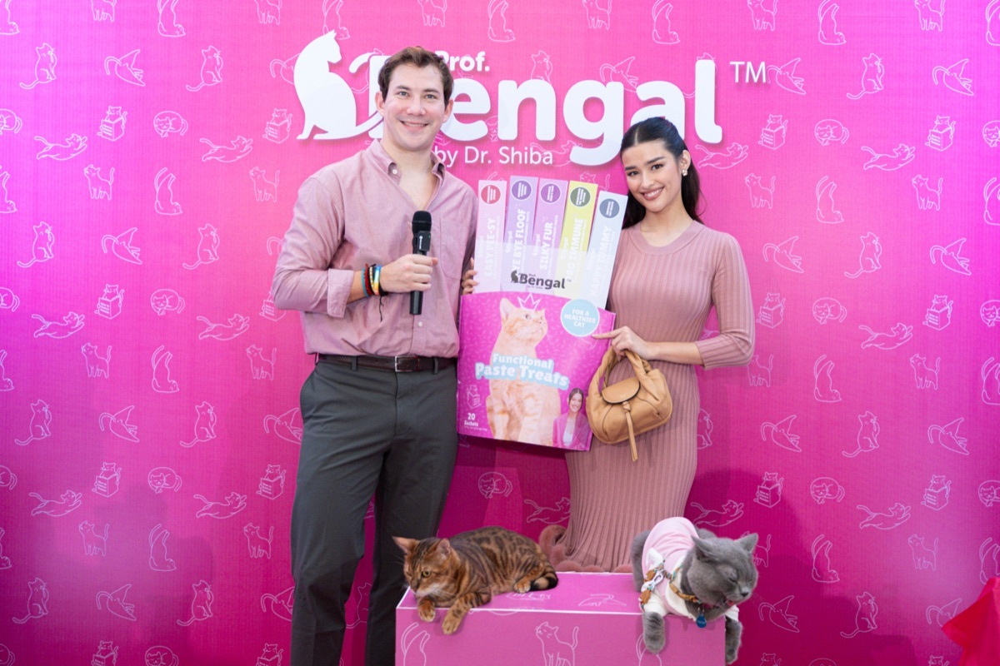
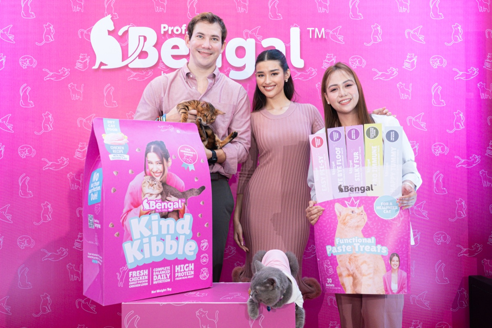
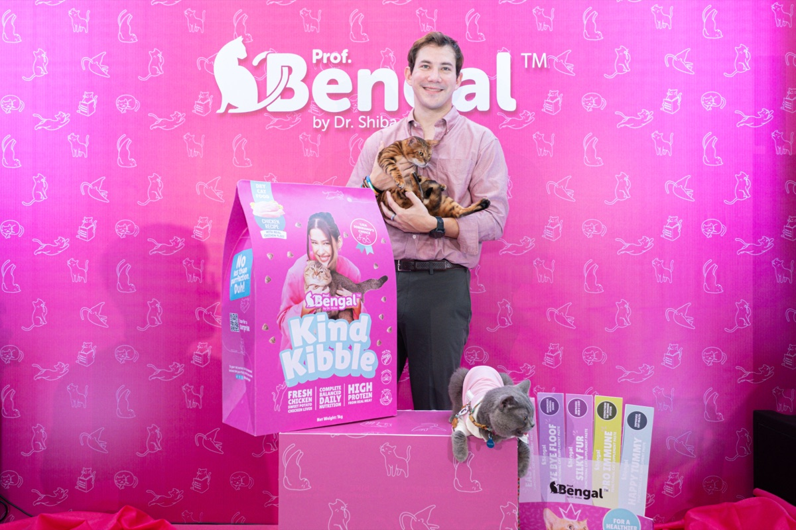
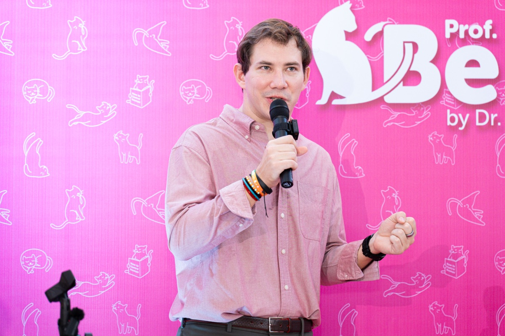

A new cat brand. 29 placements. 97.9M audience.
Prof. Bengal entered a Philippine market that has always taken dog brands more seriously. We launched it with a celebrity-fronted moment, a science-led product story and a broadcast spine, into national news, business and lifestyle press on day one.
 Liza Soberano with the unveiled Functional Paste Treats at the Prof. Bengal launch
Liza Soberano with the unveiled Functional Paste Treats at the Prof. Bengal launch
A new brand, a cat category, a cold start.
Prof. Bengal was launching a new category in the Philippines: functional cat paste treats and Kind Kibble built on real veterinary formulation. Cats get less shelf space and less press than dogs, and a brand nobody has heard of has no built-in reason for editors to commission a story.
A launch like this lives or dies on its first wave. It needed a moment editors would clear space for, a face the wider press would actually write about, and a product story that held up after the celebrity moment ended.

A moment, not a memo.
We built the launch around a single concept editors could picture: "Prof. Bengal University", with Hollywood actress and cat parent Liza Soberano fronting it as "Visiting Prof. Hope". That gave news, business and lifestyle desks a reason to send a writer or a camera.
Underneath the moment sat a science-led product story: taurine, salmon oil, prebiotics, real formulation detail vetted with a veterinary spokesperson. So when ABS-CBN, GMA, BusinessWorld and Daily Tribune wrote follow-up features, the brand had something true to stand behind once the famous name moved on.
- A launch concept ("Prof. Bengal University") that gave editors a usable frame
- Liza Soberano on-record about her own five cats and her move home from LA
- A veterinary expert, Dra. Roxanne, briefed for the science follow-ups
- A broadcast spine: ANC 24/7 (3.03M subs) and Bilyonaryo "The Daily Dish" with the CEO
- Tiered outreach: news, business, lifestyle, entertainment, pet — all in parallel
National coverage on day one. Broadcast follow-ups in the week after.
The launch ran in GMA Lifestyle ("Liza Soberano falls in love…with cats"), ABS-CBN three times (the launch story, an entertainment feature, a "pets changed her life" follow-up), The Manila Times, BusinessWorld ("Liza Soberano, the face of Prof. Bengal, talks about her cats"), Daily Tribune, Manila Standard, Philippine Star ("New cat mom: Liza Soberano rescues 5 cats in Los Angeles"), Malaya Business Insight, LionhearTV, plus an ANC 24/7 segment on the boom of the pet care industry and a Bilyonaryo "Daily Dish" interview with the CEO.
The coverage report logged 29 total pieces, 19 online articles plus 10 social posts, an estimated 397K lifetime views, a combined publication-wide audience of 97.9M, an average domain authority of 48 and a maximum of 91.
"Prof. Bengal University", in photos.
Liza Soberano as "Visiting Prof. Hope". CEO Philipp Renner on the record. A veterinary expert on the science. The functional paste treats and kibble unveiled.



Broadcast & video
The launch ran on broadcast and YouTube too. ANC 24/7 (3.03M subscribers), Bilyonaryo News Channel, and two Orange Magazine TV pieces.

The boom of the pet care industry: How lifestyle choices are driving industry growth

Building the Foundation of Pet Parenting with Philipp Renner

Q&A with Liza Soberano and Phil Renner at the Prof. Bengal University Launch

Liza Soberano at the Prof. Bengal University Launch
A new cat brand. National news, business and lifestyle, day one.
MVR × Prof. Bengal · Nov 2025
Coverage
A sample of where the launch ran. Click through and read.
Headline numbers from the Prof Bengal Coverage report (CoverageBook, Nov 2025). Placement count expanded via Gmail and web sweep, Dec 2025. Photos courtesy of Prof. Bengal.